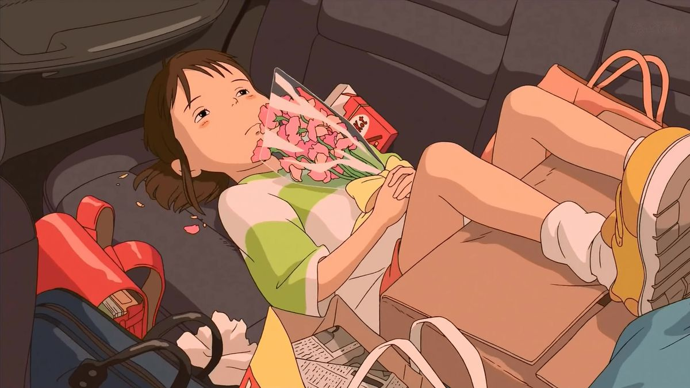
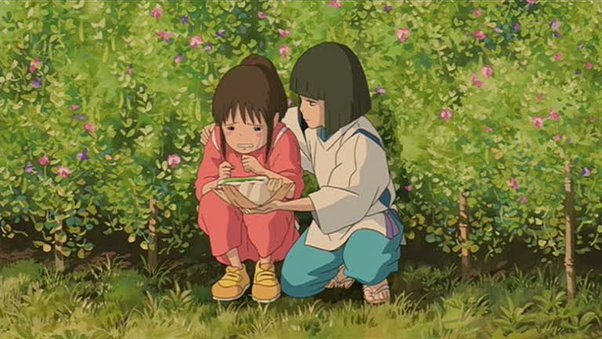

Spirited Away Reflection
Spirited Away is about the journey of a young girl(Chihiro) who finds herself entering a world that she knows nothing about and expects the worst things to happen. The first time I watched this, I had no idea what’s going on with the plot. It was confusing but for some reason I loved it. Growing up, I watched this a few more times, and everytime I rewatched it, I feel like I’m always learning something new from it.

In the beginning, Chihiro was lying in the back of her parents car, unwilling to meet the great change in her life as simple as moving to a new home. I used to be like her, refusing changes in life. I didn’t like changes because I was so used in my comfort zone. There was definitely fear involved because I was afraid that I wouldn't like these new changes. However, growing up I learned that change is necessary no matter if I like it or not and these changes will sometimes come unexpectedly in life.

Haku offers Chihiro a rice cake during her most vulnerable moment, explaining that it will boost her strength. Chihiro broke down in tears. Haku comforts Chihiro, affirming that feeling scared, upset, anxious, or angry is normal and part of our human essence. This acknowledgment requires true strength. When I was little, I used to hate crying because I thought that crying means I’m weak. However, as I grew older there were times where I couldn't control the tears coming down and I would just let myself be taken away from crying for a few minutes. What I realize is that crying and relieving my emotion out actually helped with whatever situation I was dealing with. I learned that showing my emotions, including crying, required alot of courage and strength. Now, I learned to embrace my feelings rather than reject or hide them. I’m still working on it but I can definitely feel myself trying to learn and change for the better.

While working in the bathehouse, Chihiro befriends a character name No-Face. In the film, No-Face illustrates how important companionship is for people. He is the loneliest character in the film and he starves for that connection with someone like Chihiro. Reflecting on No-Face, I'm reminded of all the individuals who offered support or comfort during tough days or challenging times in my life. These people may not realize the impact they had or how they brightened my day, highlighting the potential influence of small gestures on improving someone else's day.
There is the train scene. This is the film’s apex where Chihiro’s character arc and Miyazaki’s thematic depth intertwine.The vehicle of the sequence, the train, has a purpose as well, used to demonstrate how Chihiro began in one place in her life as this silly little child who knows nothing who is too afraid to truly live her life to the full.Then Chihiro's perspective shifts as she boards the train with No-Face, contemplating her growth and the responsibility she carries to protect her loved ones. On the platform, encountering the spirit of the little girl marks a pivotal moment for Chihiro, signifying her transition into adulthood through the realization of mortality. The spirit of the little girl is Chihiro understanding that death is real, and that it happens to children too: it is not something for adults only, not the 'end' of life, but just another 'happening'.In seeing the little girl, she ponders about the tragedy that took the little girl and understands she is lucky to be alive, to be growing, to have the possibility to love, feel and exist. This encounter prompts her to reflect on the fragility of life, appreciating her own existence and the capacity for love and growth. This liminal moment allows Chihiro to embrace her identity and fully acknowledge the complexities of life, emerging from the train transformed, enlightened, and affirmed in her individuality.
This part deeply connects with me. I experienced the unexpected loss of a very important family member, which made me confront themes of death and grief that I had never truly considered before. It's challenging to advise others on how to grieve because everyone's process is unique. Looking back, I feel fortunate to have known this person while they were alive. I believe I've internalized aspects of their personality that continue to influence me, even though they're no longer physically present. This experience marked my transition into adulthood by making me aware of mortality. Despite the brevity of our time together, I cherish the love and impact they had on my life. It has taught me to appreciate life's possibilities and be grateful for the people and small moments. I've learned to embrace change, which has transformed me into a person I never imagined I could be.